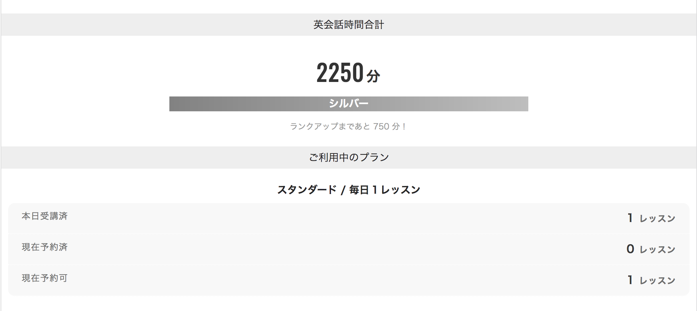
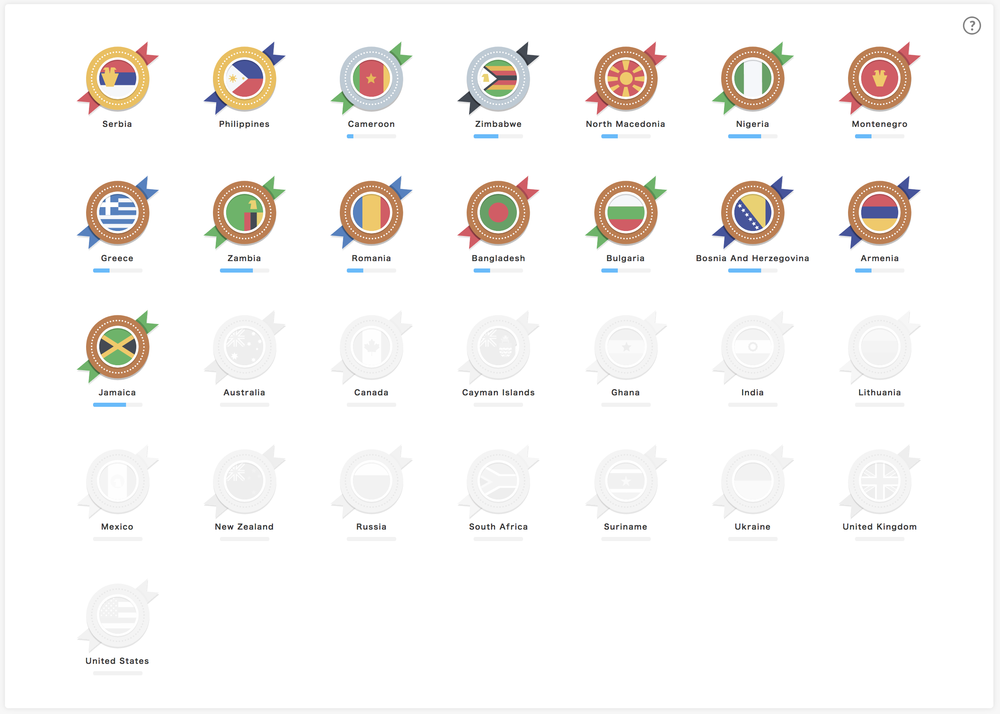

英会話を3ヶ月間毎日やってみた感想
モチベーション
自分の実力は次のように自覚している．
- 日常で英語の読み書きはしている
- 英語で話すことに苦手意識がある
- 海外旅行に行って旅行者としては困らないくらいのコミュニケーションはできる
- TOEIC は受けたことがない
モチベーションは２つある．
会社メンバーと英語でコミュニケーションしたい
メルペイには外国籍の同僚や普通に英語しゃべっている日本人も多いのがモチベーションの一つになっている．
去年の秋頃，English Speaker の方々との会議があった．何をしゃべっているかは所々わかるが，発言しようと思ってもパッと英語が出てこずこれが割とショックだったのを覚えている．当然ながら，海外旅行で話すのと，普段日本語で話していること仕事のことを英語で話せるかどうかは全く別問題．
海外挙式
今年の10月に海外挙式を予定している．奥さんが以前留学していたところに家族で行きたいという理由で，シアトル🇺🇸で挙式をすることに決めた．
昨年末に具体的に場所を決め，全てメールで現場の担当者とやりとりをしている．今はメールだけなので全く不自由はしていないが，細かいところとか電話や対面でちゃんと話せるようにしたい．
やったこと
この３ヶ月は大枠３つのことをやっていた．
1. DMM英会話
会社の補助も受けれるが，今は自分で課金している．スタンダードプラン毎日1レッスンで5980円/月で毎日1レッスン25分，Skype 英会話ができる．とても安い．

1回25分，毎日やるとこういう感じになる．トータルの時間でランクがつくようになっている．
❏ レッスン内容
ここ3ヶ月にやった内容
- 1月 Free Conversation
- 2月 Daily News
- 3月 Daily News / Conversation
1月はやり初めでDMM英会話の使い方をよくわかっていなかった．1月はとりあえず会話に慣れる期間として Free Conversation だけやっていた．現地で流行っているスマホアプリの話や好きな映画の話，仕事の話などを話していた．
ある日「普段どういうレッスンやってるの？」とチューターから聞かれて「Free Conversation しかやっていない」という話をしたら，「教材やった方がいいよ」というアドバイスをもらった．公式のレッスン教材がありこれがよくできている．
確かに Free Conversation だけだと自分が興味があったり理解している内容しか話さなくなってしまい，よくないと感じた．教材だと世界のニュースや会話シチュエーションが用意されていて毎回新しいフレーズと出会うチャンスがある．
こういう話題もあり，日本語でもディスカッション難しいような内容もあるが，これくらいの方が話す練習にはなりそうと思っている．
これ日本語でディスカッションするのもムズイw
— tanakaworld 🧢 (@_tanakaworld) February 25, 2019
"$90,000 Bonsai Tree Stolen in Saitama"https://t.co/6acxa3Bhip
2月末から新レッスンシステムが提供開始された．自分ののブラウザで開いている情報がリアルタイムにチューターに共有され，例えばテキストをハイライトすると，どこを選択しているかなどが相手にリアルタイム共有される．
❏ チューター
チューターは毎回新しい人，時々リピートになる．当日予約すると人気のある人は大抵スケジュールが埋まっていて，リピートしたくてもそもそもできない．誰とやるかは正直誰でもいいと思っていて同じ人に慣れてしまわないようにくらいの意識．
メダルコレクションというのがあり，チューター出身国ごとの受講回数でメダルがもらえる．自分のプランだと English ネイティブは予約できないので，英語を第２言語として話している国の人としかやっていない．

❏ いつやるか
毎日朝起きてからその日にやる時間を決めている．予め毎日時間を定例決めておくスタイルだと，予定が差し込まれたときにリスケするのが面倒でやらなくなる原因になりそうだったのを懸念した．
平日は会社のプライベートルームが空いている時間に予約して使っている．英会話自体は２５分，１時間部屋を確保して初め３０分は予習とか他の復習に使っている．プライベートルーム本当にありがたい．休日は家でやっている．
2. Hapa英会話 Podcast/YouTube
Podcast の方は以前から聞いていて，今年からは YouTube Channel を観始めた．ネイティブがXXXなケースでどう話すか？という視点で，語彙の使い方を解説していてとても実践的．
3. Shuffle Lunch
週１回 English Speaker とランチに行けるメルカリの制度．EnglishSpeaker:Japanese = 1:3 の4人が1グループで毎月グループが入れ替わる．
普段やっている Skype 英会話で練習していることをアウトプットする場として捉えている．
予定はカレンダーで予め確保されるが，皆業務の関係で欠席しがち．自分はよほどのことがない限り欠席しないようにしているので，1 on 1 になったり飛び入り参加の English Speaker と 3:1 みたいになったりすることもある（正直メチャメチャ緊張する）．普段業務でかかわらない人とも話せるのも楽しい．
ただ毎日やるだけではダメ
あるセルビアのチューターからこんなことを言われた
僕は英会話を4年間続けている生徒を知っている．ただ闇雲に英会話を継続したその人は，もはや全く上達していない．DMMには色々な教材があるのだからそれを一つずつやっていった方がいいよ．
毎日なんとなくしゃべるだけではダメという風に理解した．その日うまく言葉にできなかったフレーズを振り返ったり，聞き取れなかったフレーズ，わからなかった単語をまとめるといった復習もそれからはやるようにしている．将棋でもそうだけど，ただオンライン将棋を闇雲に指していると頭打ちになる．実践のやりっぱなしは何事に於いてもよくないのは明白．
まとめ
昨年末の振り返りで 英会話を毎日やる という目標を立てた．
自分の性格だと１日やらない日があると，明日でいいやと先延ばしにしてしまい結局挫折してしまいそうなので，敢えて毎日という目標にした．
過去に何度も英会話やらねばと思ってはいても続かず挫折していたが，今のところ2019年は毎日続いている．
3ヶ月で英語を話す瞬発力的なものは身についてきたのと，「わからないことをわからない」と言えるようになったのが大きかった．どういう風に聞き返せばいいかわからなかったのと，なんとなく気まずさから聞き流してしまうことがあったが今はちゃんと意味を理解するまで聞いている．
今後は Vocabrary の幅を増やす必要がありそう．言いたいことを文章にして伝えられるが少ない語彙の組み合わせだけだと回りくどい表現になっていると感じている（会話する人からも言われる）．
これからも工夫しながら続けていこうと思う．